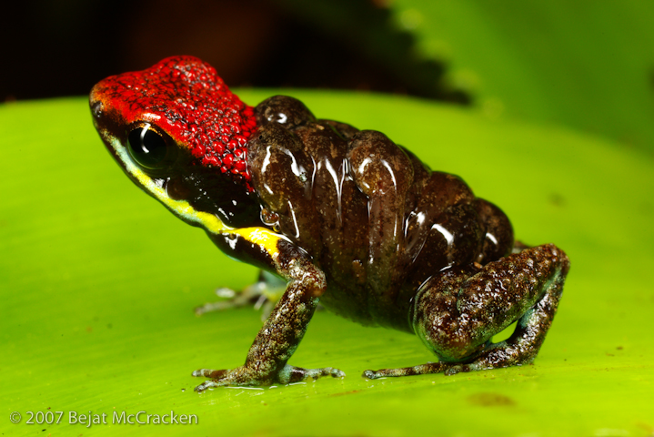
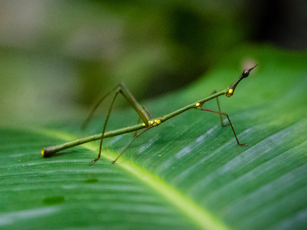
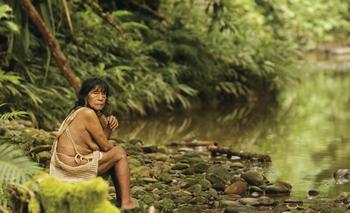
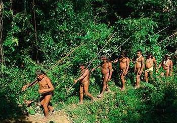
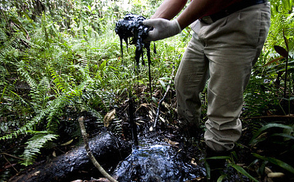
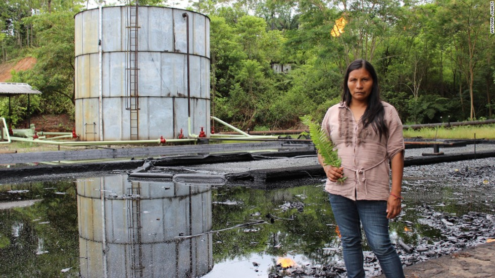

Yasuni National Park is in Ecuador with an area of 9,823km2 between the Napo and Curaray Rivers in Napo and Pastaza Provinces in Amazonian Ecuador. The national park lies within the Napo moist forests ecoregion and is primarily rain forest. The park is about 250 km from Quito and was designated a UNESCO Biosphere Reserve in 1989. It is within the claimed ancestral territory of the Huaorani indigenous people. Yasuni is home to two uncontacted indigenous tribes, the Tagaeri and the Taromenane.
Overview
Yasuni National Park is arguably the most biologically diverse spot on earth. The park is at the center of a small zone where amphibian, bird, mammal, and vascular plant diversity all reach their maximum levels within the western hemisphere. Moreover, the park breaks world records for local-scale tree, amphibian, and bat species richness, and is one of the richest spots in the world for birds and mammals at local scales as well.

Amphibians
The park holds a world record 150 amphibian species for places with comparable landscapes. It also is at the top for amphibian diversity compared to other sites sampled in the western Amazon. The total of its amphibian species is more than the United States and Canada combined.
Reptile species in the park is also very high with 121 documented species found. In spite of covering less than 0.15% of the Amazon Basin, Yasuni is home to approximately one-third of amphibian and reptile species. The park also harbors high levels of fish diversity with 382 known species. This number is greater than the amount of fish species found in the Mississippi River Basin. Yasuni also is home to at least 596 bird species which comprises one-third of the total native bird species for the Amazon.

Insects
In a single hectare, Yasuni has over 100,000 different species of insects which is roughly the amount of insect species that can be found in all of North America.
The park also boasts one of the world's richest levels of vascular plants. It is one of nine places in the world that has over 4,000 vascular plant species per 10,000 km2. The park contains many species of trees and shrubs and holds at least four world records for documented tree and liana richness as well as three world records for diversity in woody plant species. The park also hosts a list endemic species such as 43 different species of vertebrates and 220–720 different plant species. A species of bat, Lophostoma yasuni, is endemic to the park.
Huaorani People
In 1990, the Waorani won the rights to the Waorani Ethnic Reserve 6,125.60 km2 (2,365.11 sq mi). The protected status of Yasuní National Park, which overlaps with the Waorani reserve, provides some measure of environmental protection. Additionally, the government has created a protected zone inside of Yasuni, to avoid contact with the Tagaeri and Taromenane.


However, much of their land is illegally logged as corporations extract natural resources, forcing them onto smaller and smaller parcels.
Uncontacted Tribes
Yasuni is home to two uncontacted indigenous tribes, the Tagaeri and the Taromenane.
Tagaeri Tribe
The Tagaeri are an eastern Huaorani people living in Yasuni National Park, in the Ecuadorian Amazon Basin, named (in Wao-Terero, the Huaorani language) after one of their members, Tagae. Nearby Kichwa communities sometimes refer to them as Awashiri, or "high-ground people". They live a hunting and foraging lifestyle and have resisted outside contact, making them one of the so-called uncontacted peoples of the world. In addition to Tagaeri, the area is home to their kin, the Taromenane, another eastern Huaorani group.
Taromenane Tribe
The Taromenane are an uncontacted people living in Yasuni National Park, at the Ecuadorian Amazon Basin. Together with the Tagaeri they make up the two last known indigenous groups living in voluntary isolation in Ecuador. The clan is believed to be distantly related to the Huaorani people. It is estimated there are 150–300 Taromenane still maintaining a nomadic lifestyle in the rainforest, and perhaps only 20–30 surviving Tagaeri, although these numbers are uncertain.The Taromenane has recently been under threat from oil developments and illegal logging in the Yasuni National Park. In February 2008, authorities in Ecuador agreed to investigate reports that five tribespeople belonging to the Taromenane and Tagaeri tribes had been killed by illegal loggers.

Overview
Yasuni National Park is home to an estimated 1.7 billion barrels of crude oil - 40 percent of Ecuador's reserves. Environmentalists and urged the government to leave the resources untapped. Indigenous people and environmentalists called for a national referendum on the issue. This referendum called the Yasuní-ITT Initiative was enacted in 2007, and by 2009 pledges of support from around the world came to around 1.7 billion dollars. In total it hoped that US$3.6 billion would be raised over 12 years. At the time, the plan was hailed by environmentalists as a precedent setting decision that would reduce the burden of environmental preservation on the world's poorer countries.
Global Attention
Actors Leonardo DiCaprio and Edward Norton, filmmaker and global ecological activist/scientist Michael Charles Tobias, and former Vice President of the United States Al Gore were among those who pledged support to the Ecuadorian government.

Outcome
In July 2013, Correa formed a commission to evaluate the Yasuni-ITT initiative's progress to date. The commission concluded that the economic results were not sufficient. On August 15, Correa scrapped the plan citing poor follow-through from the international community. "The world has failed us", he said.